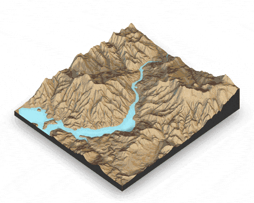
Overview
rayshader is an open source package for producing 2D and 3D data visualizations in R. rayshader uses elevation data in a base R matrix and a combination of raytracing, spherical texture mapping, overlays, and ambient occlusion to generate beautiful topographic 2D and 3D maps. In addition to maps, rayshader also allows the user to translate ggplot2 objects into beautiful 3D data visualizations.
The models can be rotated and examined interactively or the camera movement can be scripted to create animations. Scenes can also be rendered using a high-quality pathtracer, rayrender.The user can also create a cinematic depth of field post-processing effect to direct the user’s focus to important regions in the figure. The 3D models can also be exported to a 3D-printable format with a built-in STL export function.
Installation
# To install the latest version from Github:
# install.packages("devtools")
devtools::install_github("tylermorganwall/rayshader")Functions
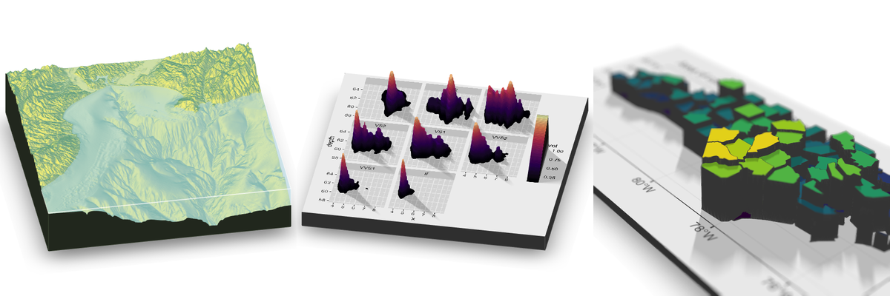
Rayshader has seven functions related to mapping:
-
ray_shadeuses user specified light directions to calculate a global shadow map for an elevation matrix. By default, this also scales the light intensity at each point by the dot product of the mean ray direction and the surface normal (also implemented in functionlamb_shade, this can be turned off by settinglambert=FALSE. -
sphere_shademaps an RGB texture to a hillshade by spherical mapping. A texture can be generated with thecreate_texturefunction, or loaded from an image.sphere_shadealso includes 7 built-in palettes: “imhof1”, “imhof2”, “imhof3”, imhof4“,”desert“,”bw“,”unicorn". -
create_textureprogrammatically creates texture maps given five colors: a highlight, a shadow, a left fill light, a right fill light, and a center color for flat areas. The user can also optionally specify the colors at the corners, butcreate_texturewill interpolate those if they aren’t given. -
ambient_shadecreates an ambient occlusion shadow layer, darkening areas that have less scattered light from the atmosphere. This results in valleys being darker than flat areas and ridges. -
lamb_shadeuses a single user specified light direction to calculate a local shadow map based on the dot product between the surface normal and the light direction for an elevation matrix. -
add_shadowtakes two of the shadow maps above and combines them, scaling the second one (or, if the second is an RGB array, the matrix) as specified by the user. -
add_overlaytakes a 3 or 4-layer RGB/RGBA array and overlays it on the current map. If the map includes transparency, this is taken into account when overlaying the image. Otherwise, the user can specify a single color that will be marked as completely transparent, or set the full overlay as partly transparent.
Rayshader also has three functions to detect and add water to maps:
-
detect_wateruses a flood-fill algorithm to detect bodies of water of a user-specified minimum area. -
add_wateruses the output ofdetect_waterto add a water color to the map. The user can input their own color, or pass the name of one of the pre-defined palettes fromsphere_shadeto get a matching hue. -
render_wateradds a 3D tranparent water layer to 3D maps, after the rgl device has already been created. This can either add to a map that does not already have a water layer, or replace an existing water layer on the map.
Also included are two functions to add additional effects and information to your 3D visualizations:
-
render_highqualityrenders in the scene with a built-in pathtracer, powered by the rayrender package. Use this for high-quality maps with realistic light transport. -
render_depthgenerates a depth of field effect for the 3D map. The user can specify the focal distance, focal length, and f-stop of the camera, as well as aperture shape and bokeh intensity. This either plots the image to the local device, or saves it to a file if given a filename. -
render_labeladds a text label to thexandycoordinate of the map at a specified altitudez(in units of the matrix). The altitude can either be specified relative to the elevation at that point (the default), or absolutely.
And four functions to display and save your visualizations:
-
plot_mapPlots the current map. Accepts either a matrix or an array. -
write_pngWrites the current map to disk with a user-specified filename. -
plot_3dCreates a 3D map, given a texture and an elevation matrix. You can customize the appearance of the map, as well as add a user-defined water level. -
render_snapshotSaves an image of the current 3D view to disk (if given a filename), or plots the 3D view to the current device (useful for including images in R Markdown files). -
render_movieCreates and saves a mp4 file of the camera rotating around the 3D scene by either using a built-in orbit or by using one provided by the user.
Finally, rayshader has a single function to generate 3D plots using ggplot2 objects:
-
plot_ggTakes a ggplot2 object (or a list of two ggplot2 objects) and uses the fill or color aesthetic to transform the plot into a 3D surface. You can pass any of the arguments used to specify the camera and the background/shadow colors inplot_3d(), and manipulate the displayed 3D plot usingrender_camera()andrender_depth().
All of these functions are designed to be used with the magrittr pipe %>%.
Usage
Rayshader can be used for two purposes: both creating hillshaded maps and 3D data visualizations plots. First, let’s look at rayshader’s mapping capabilities. For the latter, scroll below.
Mapping with rayshader
library(rayshader)
#Here, I load a map with the raster package.
loadzip = tempfile()
download.file("https://tylermw.com/data/dem_01.tif.zip", loadzip)
localtif = raster::raster(unzip(loadzip, "dem_01.tif"))
unlink(loadzip)
#And convert it to a matrix:
elmat = raster_to_matrix(localtif)
#We use another one of rayshader's built-in textures:
elmat %>%
sphere_shade(texture = "desert") %>%
plot_map()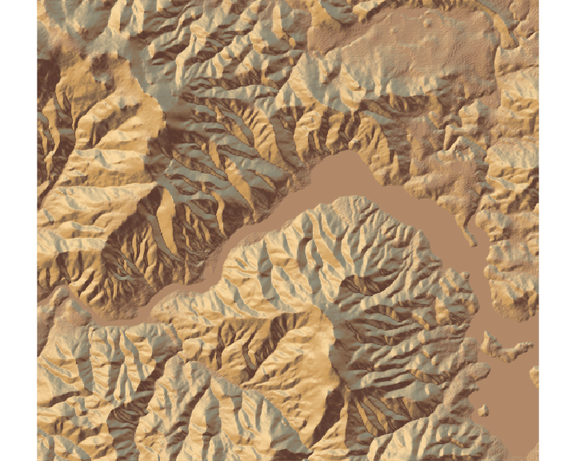
#sphere_shade can shift the sun direction:
elmat %>%
sphere_shade(sunangle = 45, texture = "desert") %>%
plot_map()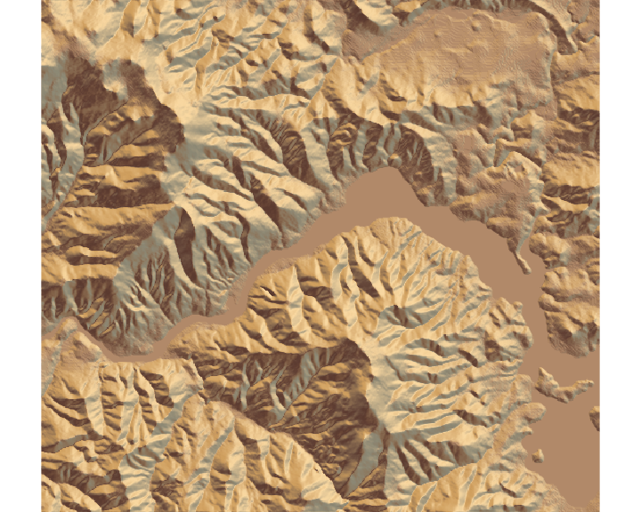
#detect_water and add_water adds a water layer to the map:
elmat %>%
sphere_shade(texture = "desert") %>%
add_water(detect_water(elmat), color = "desert") %>%
plot_map()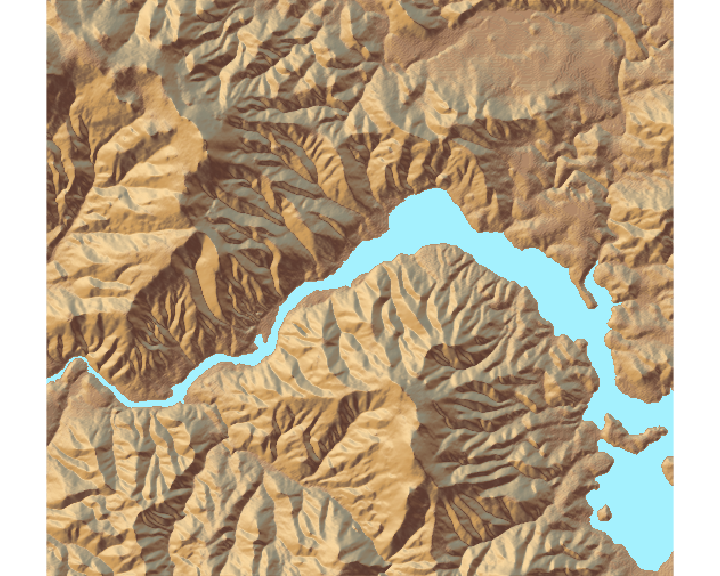
#And we can add a raytraced layer from that sun direction as well:
elmat %>%
sphere_shade(texture = "desert") %>%
add_water(detect_water(elmat), color = "desert") %>%
add_shadow(ray_shade(elmat), 0.5) %>%
plot_map()
#And here we add an ambient occlusion shadow layer, which models
#lighting from atmospheric scattering:
elmat %>%
sphere_shade(texture = "desert") %>%
add_water(detect_water(elmat), color = "desert") %>%
add_shadow(ray_shade(elmat), 0.5) %>%
add_shadow(ambient_shade(elmat), 0) %>%
plot_map()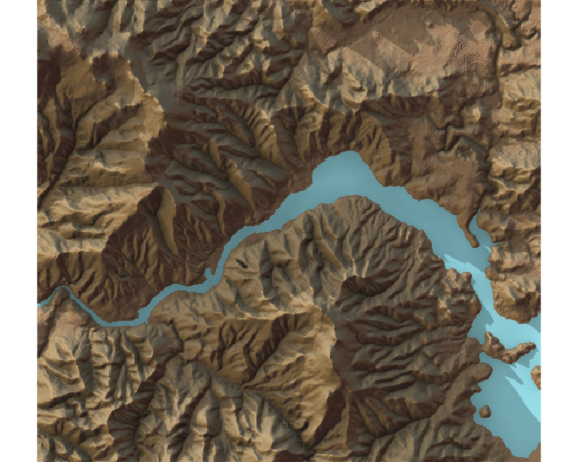
Rayshader also supports 3D mapping by passing a texture map (either external or one produced by rayshader) into the plot_3d function.
elmat %>%
sphere_shade(texture = "desert") %>%
add_water(detect_water(elmat), color = "desert") %>%
add_shadow(ray_shade(elmat, zscale = 3), 0.5) %>%
add_shadow(ambient_shade(elmat), 0) %>%
plot_3d(elmat, zscale = 10, fov = 0, theta = 135, zoom = 0.75, phi = 45, windowsize = c(1000, 800))
Sys.sleep(0.2)
render_snapshot()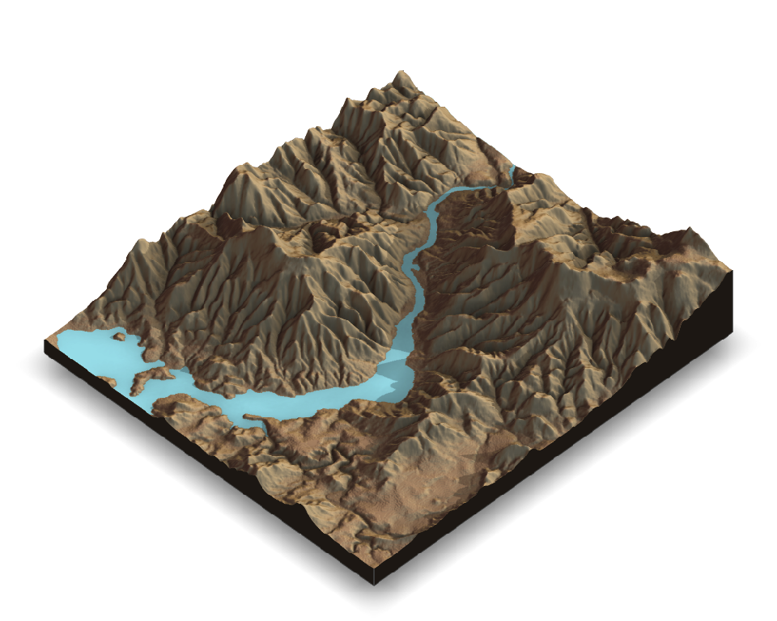
You can add a scale bar, as well as a compass using render_scalebar() and render_compass()
render_camera(fov = 0, theta = 60, zoom = 0.75, phi = 45)
render_scalebar(limits=c(0, 5, 10),label_unit = "km",position = "W", y=50,
scale_length = c(0.33,1))
render_compass(position = "E")
render_snapshot(clear=TRUE)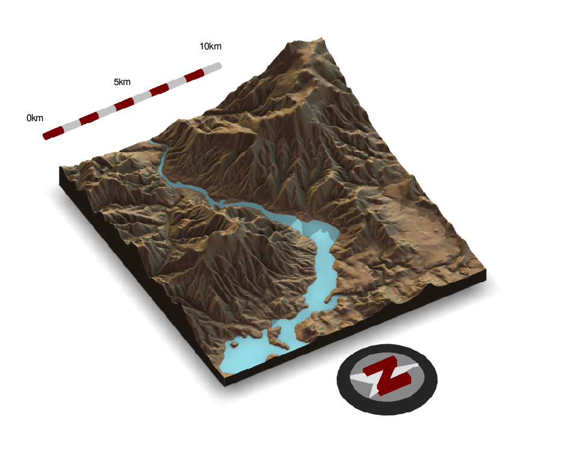
You can also render using the built-in pathtracer, powered by rayrender. Simply replace render_snapshot() with render_highquality(). When render_highquality() is called, there’s no need to pre-compute the shadows with any of the _shade() functions, so we remove those:
elmat %>%
sphere_shade(texture = "desert") %>%
add_water(detect_water(elmat), color = "desert") %>%
plot_3d(elmat, zscale = 10, fov = 0, theta = 60, zoom = 0.75, phi = 45, windowsize = c(1000, 800))
render_scalebar(limits=c(0, 5, 10),label_unit = "km",position = "W", y=50,
scale_length = c(0.33,1))
render_compass(position = "E")
Sys.sleep(0.2)
render_highquality(samples=200, scale_text_size = 24,clear=TRUE)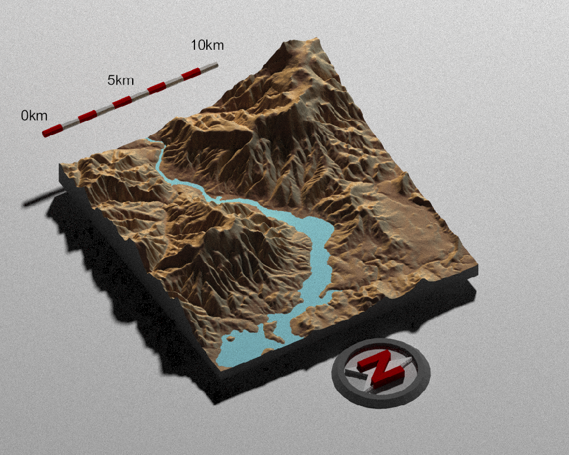
You can also easily add a water layer by setting water = TRUE in plot_3d() (and setting waterdepth if the water level is not 0), or by using the function render_water() after the 3D map has been rendered. You can customize the appearance and transparancy of the water layer via function arguments. Here’s an example using bathymetric/topographic data of Monterey Bay, CA (included with rayshader):
montshadow = ray_shade(montereybay, zscale = 50, lambert = FALSE)
montamb = ambient_shade(montereybay, zscale = 50)
montereybay %>%
sphere_shade(zscale = 10, texture = "imhof1") %>%
add_shadow(montshadow, 0.5) %>%
add_shadow(montamb, 0) %>%
plot_3d(montereybay, zscale = 50, fov = 0, theta = -45, phi = 45,
windowsize = c(1000, 800), zoom = 0.75,
water = TRUE, waterdepth = 0, wateralpha = 0.5, watercolor = "lightblue",
waterlinecolor = "white", waterlinealpha = 0.5)
Sys.sleep(0.2)
render_snapshot(clear=TRUE)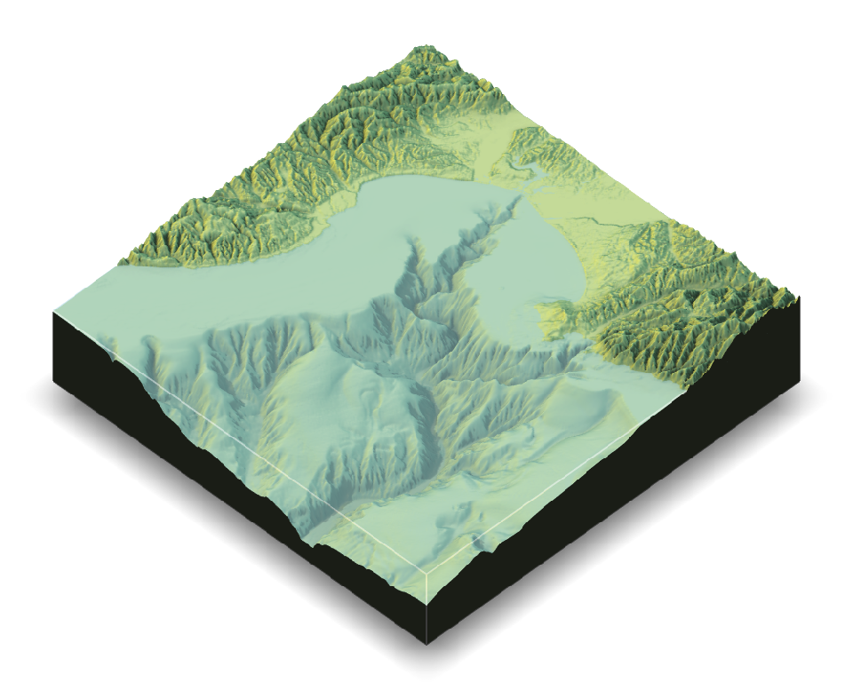
Water is also supported in render_highquality(). We load the rayrender package to change the ground material to include a checker pattern. By default, the camera looks at the origin, but we shift it down slightly to center the map.
library(rayrender)
montereybay %>%
sphere_shade(zscale = 10, texture = "imhof1") %>%
plot_3d(montereybay, zscale = 50, fov = 70, theta = 270, phi = 30,
windowsize = c(1000, 800), zoom = 0.6,
water = TRUE, waterdepth = 0, wateralpha = 0.5, watercolor = "#233aa1",
waterlinecolor = "white", waterlinealpha = 0.5)
Sys.sleep(0.2)
render_highquality(lightdirection = c(-45,45), lightaltitude = 30, clamp_value = 10,
samples = 200, camera_lookat= c(0,-50,0),
ground_material = diffuse(color="grey50",checkercolor = "grey20", checkerperiod = 100))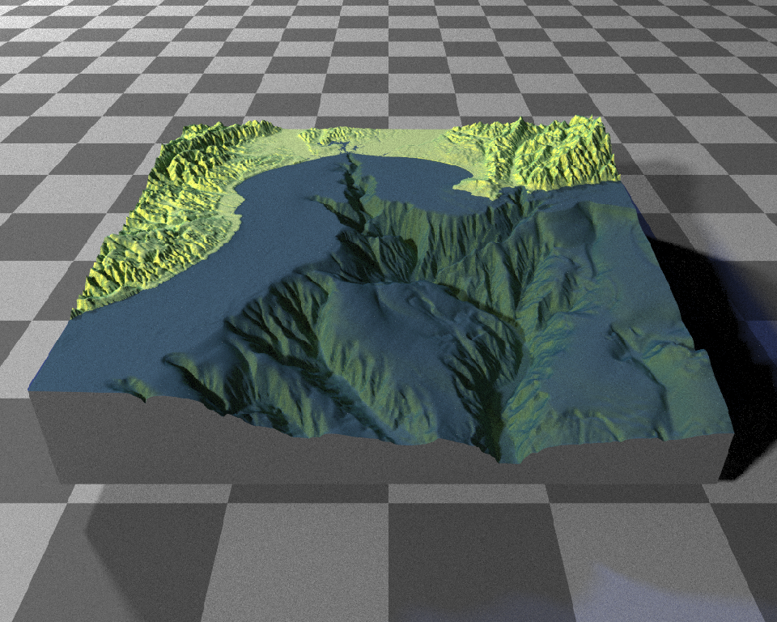
Rayshader also has map shapes other than rectangular included c("hex", "circle"), and you can customize the map into any shape you want by setting the areas you do not want to display to NA.
par(mfrow = c(1, 2))
montereybay %>%
sphere_shade(zscale = 10, texture = "imhof1") %>%
add_shadow(montshadow, 0.5) %>%
add_shadow(montamb, 0) %>%
plot_3d(montereybay, zscale = 50, fov = 0, theta = -45, phi = 45, windowsize = c(1000, 800), zoom = 0.6,
water = TRUE, waterdepth = 0, wateralpha = 0.5, watercolor = "lightblue",
waterlinecolor = "white", waterlinealpha = 0.5, baseshape = "circle")
render_snapshot(clear = TRUE)
montereybay %>%
sphere_shade(zscale = 10, texture = "imhof1") %>%
add_shadow(montshadow, 0.5) %>%
add_shadow(montamb, 0) %>%
plot_3d(montereybay, zscale = 50, fov = 0, theta = -45, phi = 45, windowsize = c(1000, 800), zoom = 0.6,
water = TRUE, waterdepth = 0, wateralpha = 0.5, watercolor = "lightblue",
waterlinecolor = "white", waterlinealpha = 0.5, baseshape = "hex")
render_snapshot(clear = TRUE)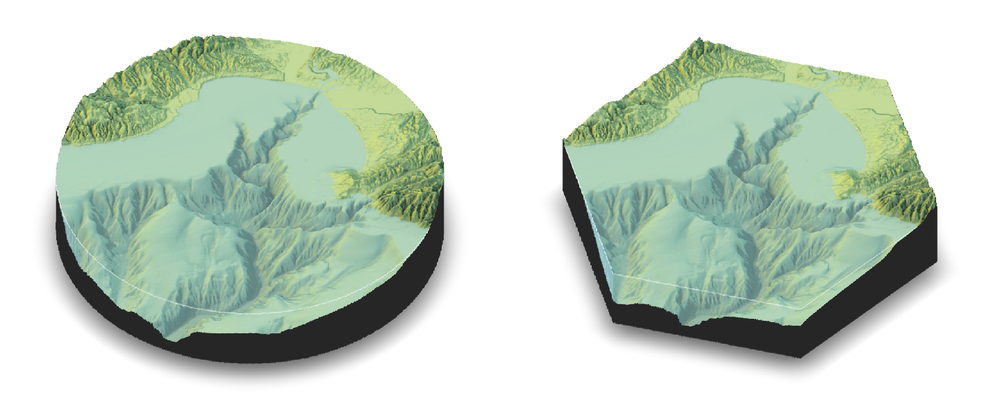
Adding text labels is done with the render_label() function, which also allows you to customize the line type, color, and size along with the font:
montereybay %>%
sphere_shade(zscale = 10, texture = "imhof1") %>%
add_shadow(montshadow, 0.5) %>%
add_shadow(montamb,0) %>%
plot_3d(montereybay, zscale = 50, fov = 0, theta = -100, phi = 30, windowsize = c(1000, 800), zoom = 0.6,
water = TRUE, waterdepth = 0, waterlinecolor = "white", waterlinealpha = 0.5,
wateralpha = 0.5, watercolor = "lightblue")
render_label(montereybay, x = 350, y = 160, z = 1000, zscale = 50,
text = "Moss Landing", textsize = 2, linewidth = 5)
render_label(montereybay, x = 220, y = 70, z = 7000, zscale = 50,
text = "Santa Cruz", textcolor = "darkred", linecolor = "darkred",
textsize = 2, linewidth = 5)
render_label(montereybay, x = 300, y = 270, z = 4000, zscale = 50,
text = "Monterey", dashed = TRUE, textsize = 2, linewidth = 5)
render_label(montereybay, x = 50, y = 270, z = 1000, zscale = 50, textcolor = "white", linecolor = "white",
text = "Monterey Canyon", relativez = FALSE, textsize = 2, linewidth = 5)
Sys.sleep(0.2)
render_snapshot(clear=TRUE)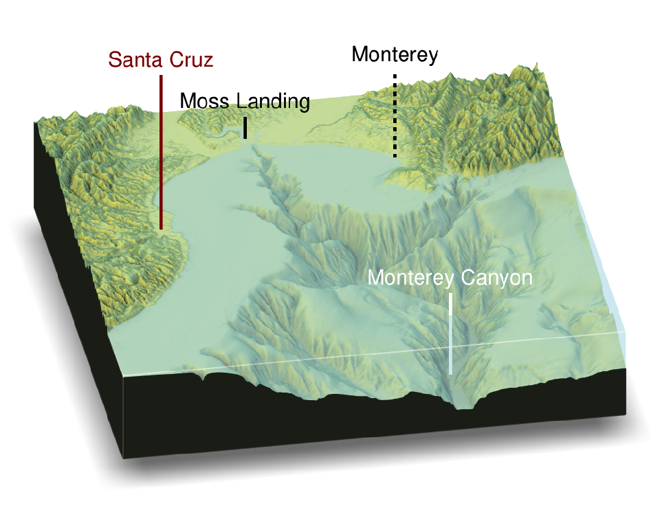
Labels are also supported in render_highquality():
render_highquality(samples=200, line_radius = 1, text_size = 18, text_offset = c(0,12,0),
clamp_value=10, clear = TRUE)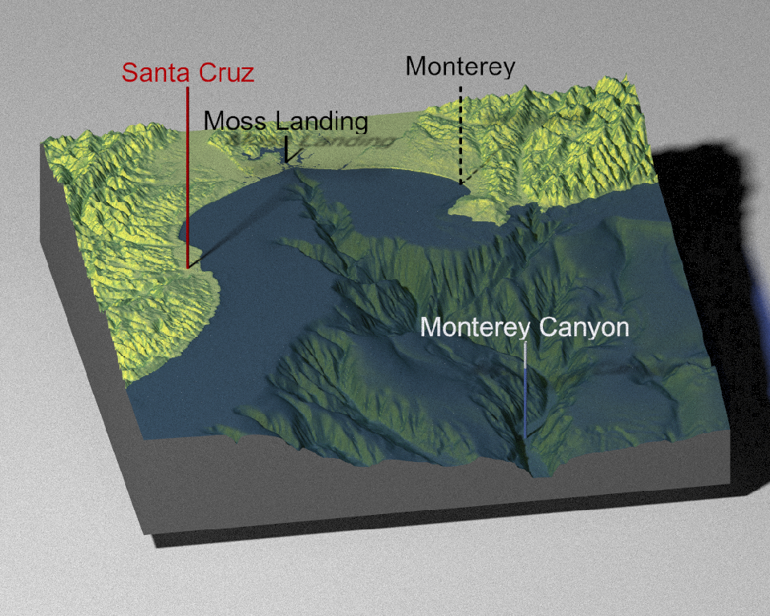
You can also apply a post-processing effect to the 3D maps to render maps with depth of field with the render_depth() function:
elmat %>%
sphere_shade(texture = "desert") %>%
add_water(detect_water(elmat), color = "desert") %>%
add_shadow(ray_shade(elmat, zscale = 3), 0.5) %>%
add_shadow(ambient_shade(elmat), 0) %>%
plot_3d(elmat, zscale = 10, fov = 30, theta = -225, phi = 25, windowsize = c(1000, 800), zoom = 0.3)
Sys.sleep(0.2)
render_depth(focus = 0.6, focallength = 200, clear = TRUE)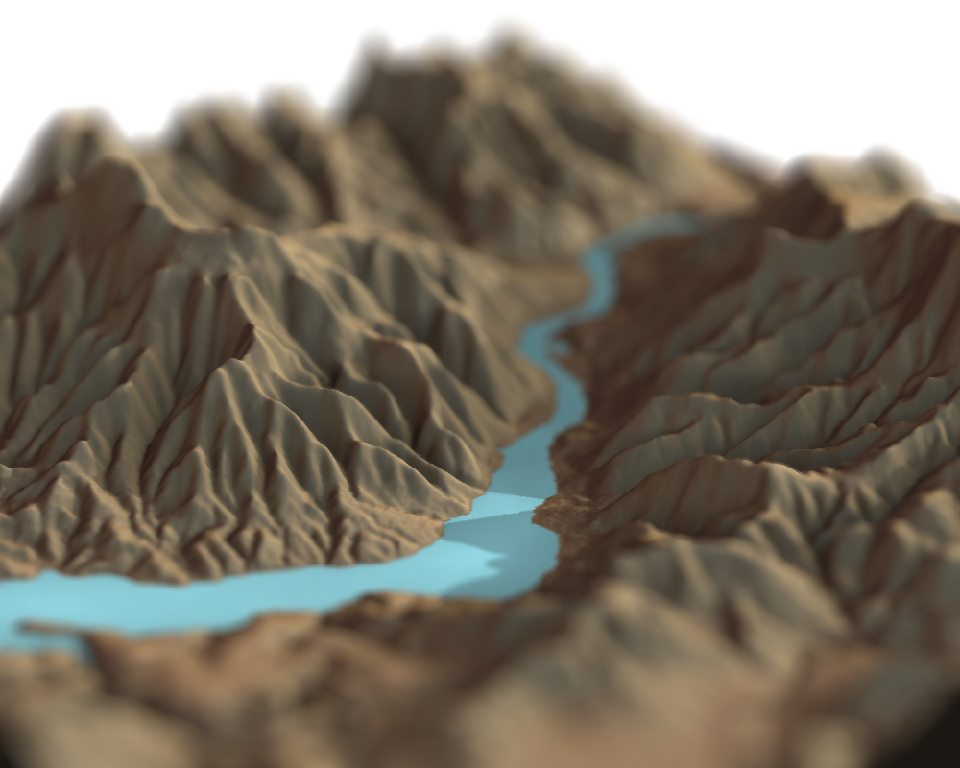
3D plotting with rayshader and ggplot2
Rayshader can also be used to make 3D plots out of ggplot2 objects using the plot_gg() function. Here, I turn a color density plot into a 3D density plot. plot_gg() detects that the user mapped the fill aesthetic to color and uses that information to project the figure into 3D.
library(ggplot2)
ggdiamonds = ggplot(diamonds) +
stat_density_2d(aes(x = x, y = depth, fill = stat(nlevel)),
geom = "polygon", n = 100, bins = 10, contour = TRUE) +
facet_wrap(clarity~.) +
scale_fill_viridis_c(option = "A")
par(mfrow = c(1, 2))
plot_gg(ggdiamonds, width = 5, height = 5, raytrace = FALSE, preview = TRUE)
plot_gg(ggdiamonds, width = 5, height = 5, multicore = TRUE, scale = 250,
zoom = 0.7, theta = 10, phi = 30, windowsize = c(800, 800))
Sys.sleep(0.2)
render_snapshot(clear = TRUE)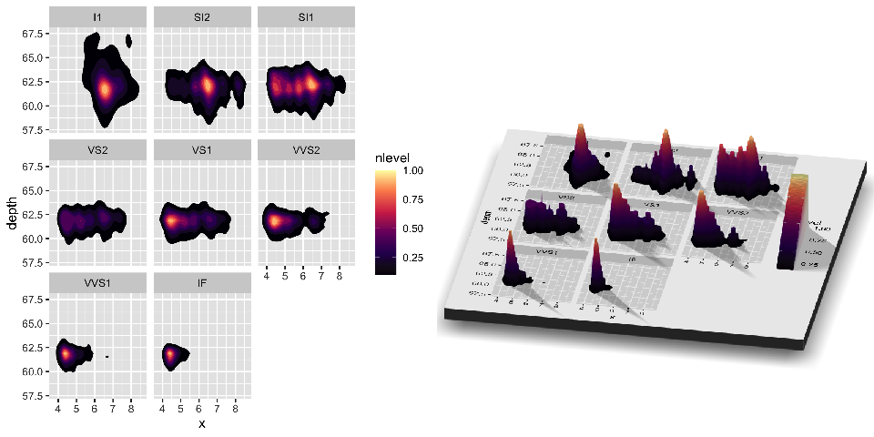
Rayshader will automatically ignore lines and other elements that should not be mapped to 3D. Here’s a contour plot of the volcano dataset.
library(reshape2)
#Contours and other lines will automatically be ignored. Here is the volcano dataset:
ggvolcano = volcano %>%
melt() %>%
ggplot() +
geom_tile(aes(x = Var1, y = Var2, fill = value)) +
geom_contour(aes(x = Var1, y = Var2, z = value), color = "black") +
scale_x_continuous("X", expand = c(0, 0)) +
scale_y_continuous("Y", expand = c(0, 0)) +
scale_fill_gradientn("Z", colours = terrain.colors(10)) +
coord_fixed()
par(mfrow = c(1, 2))
plot_gg(ggvolcano, width = 7, height = 4, raytrace = FALSE, preview = TRUE)plot_gg(ggvolcano, multicore = TRUE, raytrace = TRUE, width = 7, height = 4,
scale = 300, windowsize = c(1400, 866), zoom = 0.6, phi = 30, theta = 30)Sys.sleep(0.2)
render_snapshot(clear = TRUE)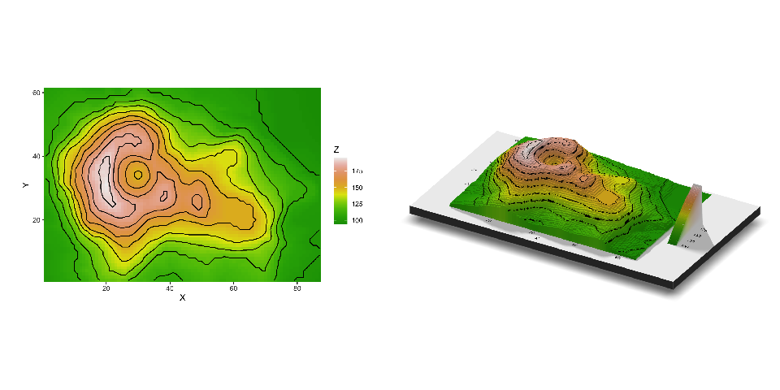
Rayshader also detects when the user passes the color aesthetic, and maps those values to 3D. If both color and fill are passed, however, rayshader will default to fill.
mtplot = ggplot(mtcars) +
geom_point(aes(x = mpg, y = disp, color = cyl)) +
scale_color_continuous(limits = c(0, 8))
par(mfrow = c(1, 2))
plot_gg(mtplot, width = 3.5, raytrace = FALSE, preview = TRUE)
plot_gg(mtplot, width = 3.5, multicore = TRUE, windowsize = c(800, 800),
zoom = 0.85, phi = 35, theta = 30, sunangle = 225, soliddepth = -100)
Sys.sleep(0.2)
render_snapshot(clear = TRUE)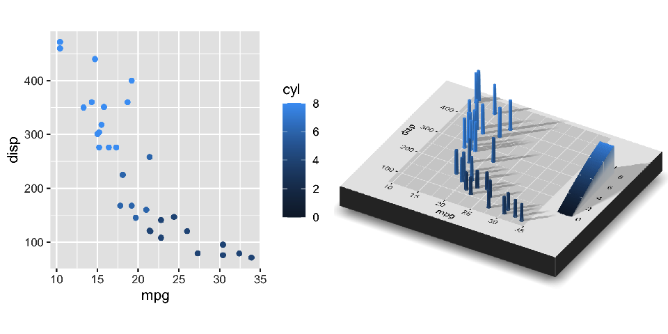
Utilize combinations of line color and fill to create different effects. Here is a terraced hexbin plot, created by mapping the line colors of the hexagons to black.
a = data.frame(x = rnorm(20000, 10, 1.9), y = rnorm(20000, 10, 1.2))
b = data.frame(x = rnorm(20000, 14.5, 1.9), y = rnorm(20000, 14.5, 1.9))
c = data.frame(x = rnorm(20000, 9.5, 1.9), y = rnorm(20000, 15.5, 1.9))
data = rbind(a, b, c)
#Lines
pp = ggplot(data, aes(x = x, y = y)) +
geom_hex(bins = 20, size = 0.5, color = "black") +
scale_fill_viridis_c(option = "C")
par(mfrow = c(1, 2))
plot_gg(pp, width = 5, height = 4, scale = 300, raytrace = FALSE, preview = TRUE)
plot_gg(pp, width = 5, height = 4, scale = 300, multicore = TRUE, windowsize = c(1000, 800))
render_camera(fov = 70, zoom = 0.5, theta = 130, phi = 35)
Sys.sleep(0.2)
render_snapshot(clear = TRUE)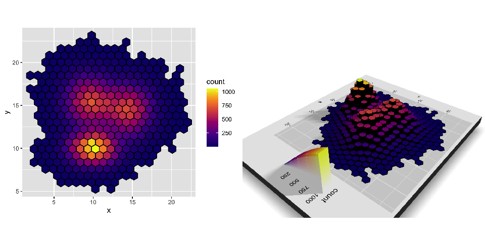
You can also use the render_depth() function to direct the viewer’s focus to a important areas in the figure.
par(mfrow = c(1, 1))
plot_gg(pp, width = 5, height = 4, scale = 300, multicore = TRUE, windowsize = c(1200, 960),
fov = 70, zoom = 0.4, theta = 330, phi = 40)
Sys.sleep(0.2)
render_depth(focus = 0.68, focallength = 200,clear=TRUE)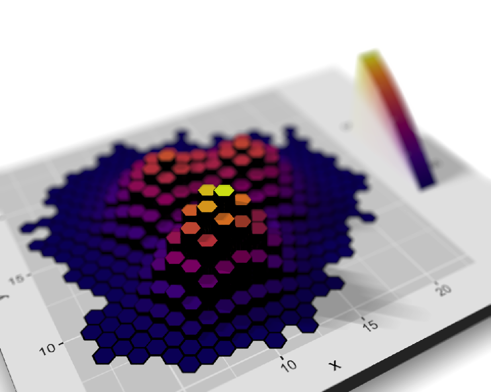
Finally, you can increase the allowable error in triangulating the model to vastly reduce the size. Here, we reduce the model to 1/100th of it’s raw (un-triangulated) size, while maintaining model quality. This can improve the performance when rendering 3D ggplots with render_highquality(), as well as improve performance on slower computers. This triangulation is powered by the {terrainmeshr} package.
Here, we make a 3D ggplot out of glass, using a triangulated model and render_highquality().
par(mfrow = c(1, 1))
plot_gg(pp, width = 5, height = 4, scale = 300, raytrace = FALSE, windowsize = c(1200, 960),
fov = 70, zoom = 0.4, theta = 330, phi = 20, max_error = 0.01, verbose = TRUE)Sys.sleep(0.2)
render_highquality(samples = 400, aperture=30, light = FALSE, ambient = TRUE,focal_distance = 1700,
obj_material = rayrender::dielectric(attenuation = c(1,1,0.3)/200),
ground_material = rayrender::diffuse(checkercolor = "grey80",sigma=90,checkerperiod = 100))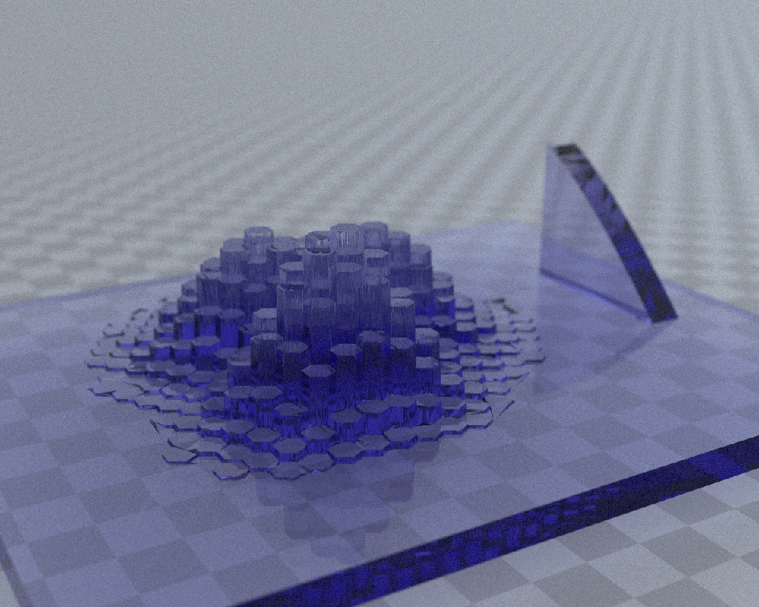